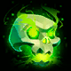
SKILL 01
Torment of Powerlessness
Jorgen summons a massive skull onto the enemy frontline, dealing Magic Damage to nearby enemies and preventing affected targets from gaining Energy for nine seconds. The damage scales with Magic Attack.
The whole build on one screen. Every recommendation is explained in full further down.
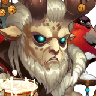
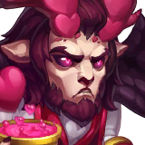
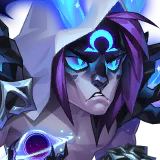
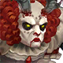
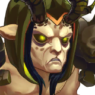
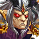
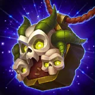
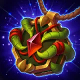
Jorgen controls one of the most important resources in battle: Energy. He can prevent enemies from gaining it, steal it with basic attacks and accelerate the Energy generation of his allies.
Jorgen is not built around massive burst damage. His strength comes from disrupting enemy timing while accelerating his own team's win condition. The longer he remains active, the harder it becomes for the enemy to execute its normal battle rhythm.

Jorgen summons a massive skull onto the enemy frontline, dealing Magic Damage to nearby enemies and preventing affected targets from gaining Energy for nine seconds. The damage scales with Magic Attack.
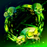
Jorgen protects one ally with a magical shield. While the shield remains active, that hero gains Energy at twice the normal rate. The shield scales with Jorgen's Magic Attack.
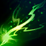
Jorgen curses the enemy team for ten seconds, redirecting all Physical Damage they receive toward the furthest enemy hero. The skill does not scale with Jorgen's stats and depends on skill level.
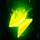
Every time Jorgen attacks, he steals Energy from his target. Each attack can delay another enemy Ultimate, reinforcing his ability to control the pace of combat.
MAGIC ATTACK
Improves Torment of Powerlessness and strengthens the shield from Cycle of Energies.
SECOND MAGIC ATTACK
Continues strengthening Jorgen's offensive scaling and his support shield.
TOUGHNESS
Reduces incoming damage once Jorgen falls below fifty percent Health, increasing survivability.
MAGIC DEFENSE
Helps Jorgen survive against dangerous enemy mages and continue disrupting the battle.
DEFAULT — STRENGTH
Improves his primary stat and contributes additional survivability.
HEALTH
Useful for durability, but lower priority than Magic Attack and Jorgen's defensive resistances.
Future skins: another Magic Attack or Magic Defense Skin would become one of Jorgen's highest development priorities.
Improves the Ultimate's damage and strengthens the shield provided through Cycle of Energies.
Improves survivability against enemy mages and helps Jorgen remain active for longer.
Compensates for the absence of an Armor Skin and improves his resistance to physical attackers.
Improves his primary stat and provides additional durability.
Useful additional survivability, but lower overall priority than Magic Attack and defensive stats.
Progression: bring every Glyph to around Level 40 before pushing them significantly further unless you are progressing Hero Classes.
Grants the entire team a Magic Attack bonus whenever Jorgen activates Torment of Powerlessness. Particularly valuable in magic-based compositions.
Provides Armor and Magic Defense, significantly improving Jorgen's survivability.
Increases Strength, providing additional durability after the more impactful Weapon and Book investments.
Jorgen needs enough durability to survive burst damage and remain active. Every permanent stat increase gives him more opportunities to cast his Ultimate and continue disrupting enemy Energy generation.
An excellent option when the objective is maximizing Jorgen's defensive profile and survivability.
Strengthens Jorgen's Magic Attack while simultaneously improving his physical durability through Armor.

Rusty Hook can pull additional enemies toward the area affected by Torment of Powerlessness.


Krista can prepare the battlefield with Frozen Needles, while Lars can drag enemies into Jorgen's skull using Lord of the Storm.

Faceless can copy Torment of Powerlessness, potentially extending the enemy team's Energy denial even further.

Orion can provide additional Magic Penetration to the team, increasing the magical pressure around Jorgen's control-oriented playstyle.

Jorgen's Energy manipulation can trigger Satori's passive and contribute to additional Fox Fire Marks.

Her strong survivability can reduce the impact of Leper when she becomes the furthest target.

Serenity removes negative effects from nearby allies, helping them recover from Jorgen's control.

Punishes enemy control heroes by increasing the damage they receive when applying control effects.

Continuous stuns can interrupt Jorgen's rhythm, delaying attacks and slowing his Energy stealing.
Jorgen controls combat by stopping Ultimates, accelerating allies, disrupting enemy timing and manipulating Energy. His value comes from controlling the rhythm of the battle and preventing the enemy from executing its normal game plan.